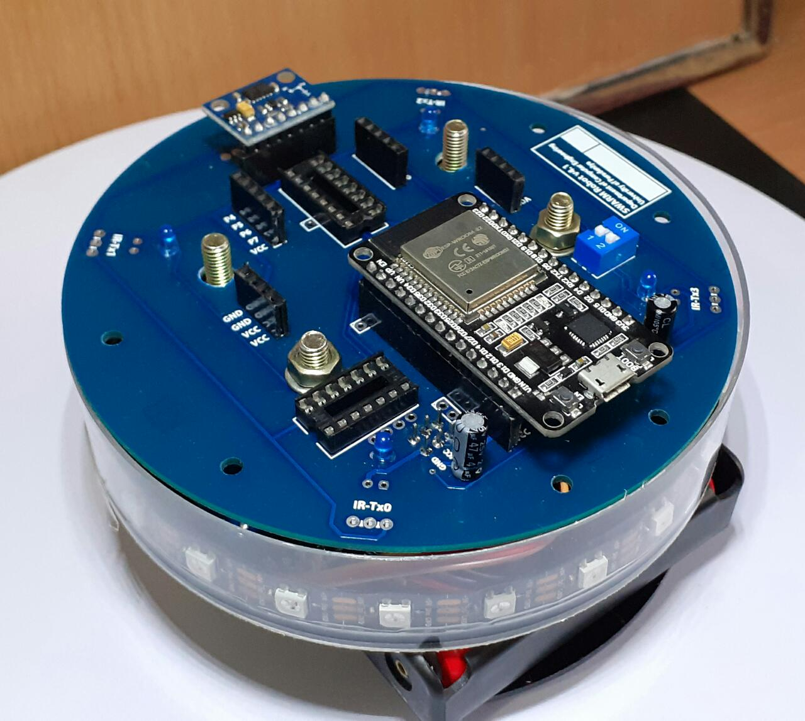
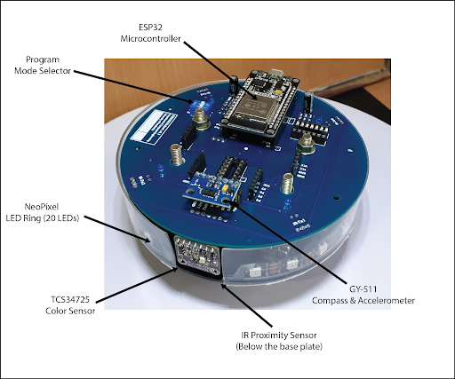
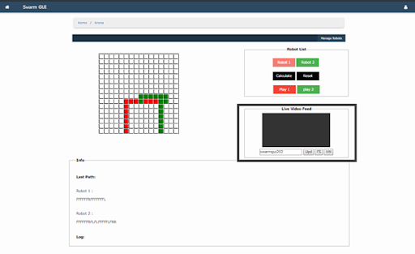
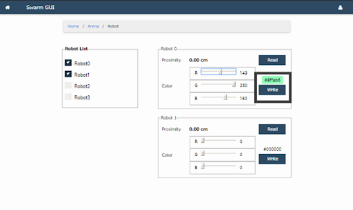
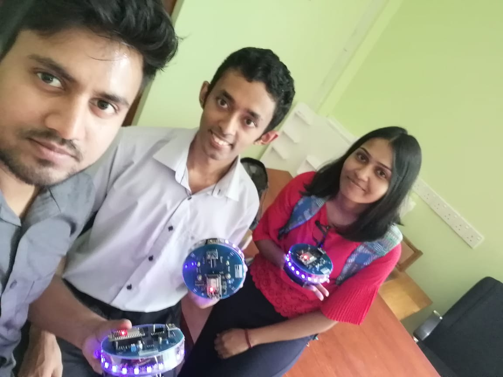

A GUI for Controlling and Supervising Multiple Robots Remotely is a command-and-control platform
developed to enable operators to monitor, coordinate, and control multiple robotic units from a
centralized interface. The project was designed to simplify human-robot interaction by providing
a real-time graphical environment through which users can issue commands, monitor robot status,
and supervise multiple autonomous or semi-autonomous robots operating in remote locations.
The application provides an intuitive interface for managing robot operations, allowing users to
send movement commands, observe robot responses, and monitor the execution of assigned tasks.
Communication between the graphical user interface and robotic platforms was designed to support
reliable command transmission while presenting real-time information in a user-friendly manner.
The system was developed with scalability in mind, enabling multiple robots to be supervised
simultaneously through a single interface.
The project involved designing and implementing the graphical user interface, integrating
communication mechanisms between the control station and robotic units, and developing modules
for command execution and status monitoring. Various testing scenarios were conducted to
validate communication reliability, command responsiveness, and overall system performance in a
multi-robot environment.
Through this project, practical knowledge was gained in graphical user interface development,
distributed robotic systems, network communication, and software integration for real-time
control applications. The project also provided valuable experience in designing software for
robotics, emphasizing usability, scalability, and reliable communication between software and
hardware components.
Key Responsibilities
* Designed and developed a user-friendly graphical interface for remotely supervising multiple
autonomous ground robots.
* Implemented real-time command execution to control and coordinate robot movements from a
centralized control panel.
* Developed monitoring features to visualize robot status, connectivity, and operational
information.
* Integrated communication modules enabling reliable interaction between the control application
and distributed robotic units.
* Supported collaborative swarm-robotics experiments by providing centralized monitoring and
coordination capabilities.
* Participated in system integration, testing, debugging, and validation to ensure reliable
operation in real-world environments.
* Collaborated with multidisciplinary teams working on swarm intelligence, robot communication,
and autonomous systems.
* Contributed to improving the usability and scalability of the control platform for research
and educational applications.
Technologies
Java, MQTT, Distributed Systems, Multi-Agent Systems, Robotics, GUI Development, Network
Communication, Git
Gallery





Team
 Dilshani Karunarathna
Dilshani Karunarathna
 Nuwan Jaliyagoda
Nuwan Jaliyagoda
 Pasan Tennakoon
Pasan Tennakoon
Resources/ Links
- Introduction Video
- Final Project Presentation
- Project Blog
- https://github.com/cepdnaclk/e15-3yp-A-GUI-for-controlling-and-supervising-multiple-robots-remotely